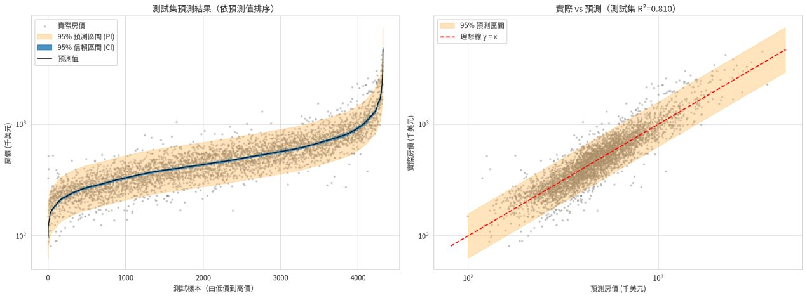
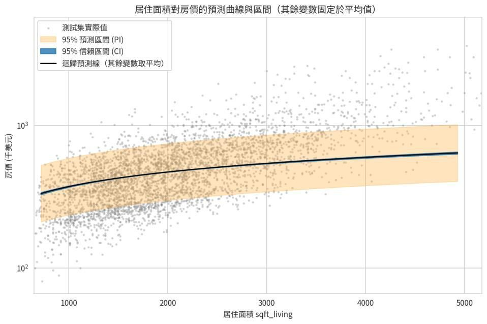
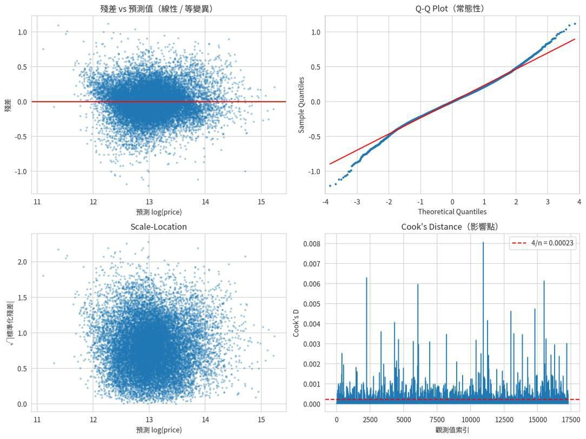

從 18 個候選變數到 17 個特徵
先以 VIF 檢查共線性，再進行向後逐步迴歸，剔除 has_basement（p = 0.083）。LassoCV 則保留所有候選變數，因此兩種選法的預測表現相近，但保留的特徵集合並不完全相同。
居住面積增加 1%，房價約增加 0.34%；品質 grade 每提高一級，房價約增加 15.8%；同條件下臨水岸約高 52%。上述為模型的條件關聯，並非因果效果。
下列數值與圖片取自原始報告，尚未取得原始 main.py 重新驗證。
先以 VIF 檢查共線性，再進行向後逐步迴歸，剔除 has_basement（p = 0.083）。LassoCV 則保留所有候選變數，因此兩種選法的預測表現相近，但保留的特徵集合並不完全相同。
居住面積增加 1%，房價約增加 0.34%；品質 grade 每提高一級，房價約增加 15.8%；同條件下臨水岸約高 52%。上述為模型的條件關聯，並非因果效果。
| 模型 | 測試 R²（log） | RMSE（美元） |
|---|---|---|
| 單純回歸 · log 面積 | 0.468 | 報告未列 |
| 全變數 OLS | 0.8100 | 168,073 |
| 最終 OLS · 17 特徵 | 0.8100 | 168,193 |
| Lasso | 0.8100 | 168,250 |
| Ridge | 0.8100 | 168,113 |

原始報告第 12 頁、圖 8。CI 估計平均反應；PI 描述個別觀測的不確定性。exp(log 預測) 是美元價格的中位數估計；log 模型的平均反應 CI 取 exp 後，對應美元中位數的 CI。

報告圖 9，其餘變數固定於平均值。

協助仲介與買家依房屋條件估價，目標為測試 log R² ≥ 0.80，並提供可解釋係數及 95% 區間。
交易期間為 2014–2015 年。扣除 price、id、date 後仍有 18 個原始房屋特徵，符合超過 13 個特徵的要求。原始價格右偏、偏態 4.02。
報告移除 11 筆異常資料，留下 21,602 筆。價格與面積取 log；建立屋齡、整修與距市中心距離；避免面積完全共線。
17,281 筆訓練、4,321 筆測試。以 VIF、向後選取及 LassoCV 檢查特徵，再比較 OLS、Lasso、Ridge。
測試 log R² = 0.810、美元 RMSE = 168,193、MAPE 約 18.1%。另以交叉驗證、殘差診斷與 PI 覆蓋率評估。
以 GitHub 提供研究結果與瀏覽器分析工具。房價模型基於舊年度交易，不作為當前市價保證；後續需新資料重訓與誤差監控。
網址需允許跨來源 CORS；GitHub 請使用 raw.githubusercontent.com 原始 CSV 連結。若網址無法讀取，可先下載後選擇檔案。
UTF-8、逗號分隔；最多 30,000 筆、編碼後 50 個特徵。高基數 ID／日期請排除。
正在載入預設資料…
空值與無效目標列會移除；類別編碼、標準化及特徵選擇只使用訓練資料。逐步選取後的 p 值與 CI 為探索性推論。
虛線代表完美預測。圖面最多顯示 300 筆，指標使用完整測試集。
依預測值排序，最多顯示 120 筆。內層為 CI，外層為 PI；目標取 log 時，還原後的點預測與 CI 對應原尺度的中位數。
連續特徵及 dummy 欄位均按訓練集標準化，係數對應一個訓練標準差的改變。
95% 區間採同方差 OLS 與 Student-t 分布；若資料存在異質變異、群聚或分布漂移，區間可能失準。自訂資料需自行確認線性回歸適用性。
Kaggle · House Sales in King County, USA ↗
harlfoxem · 2014–2015 · CC0。主作業資料，18 個原始預測特徵。
50 Startups CSV · Avik-Jain ↗
第二種問題的加分示範；僅有 4 個原始特徵，不取代主作業資料集。
比較 King County 房價預測的不同解法，可發現居住面積、建築品質與臨水岸條件是共同的重要特徵，而地理位置的處理會影響模型表現。參考專案使用郵遞區號分級或 One-Hot 編碼，本研究則使用經緯度與距市中心距離，並對價格及面積取 log，以減少偏態。面積欄位間存在共線性，因此需進行 VIF 檢查與特徵調整。兩者都採多元線性回歸及交叉驗證，但目標尺度、資料切分與指標不同，不能直接以 R² 或 RMSE 高低判定優劣。後續可在相同評估條件下，測試郵遞區號、交互作用及穩健標準誤的改善效果。
超過 100 字；本頁依使用者提供的 NotebookLM 章節整理，未另行操作 NotebookLM。原始研究內容見報告第 20–23 頁。
本次 ChatGPT 協助檢查作業要求、補上來源連結、整理網站內容、撰寫互動 OLS 工具與測試，以及將網站檔案上傳 GitHub。報告的模型數字與原始圖表來自使用者提供的 PDF；原報告第 8 章標為 Claude 的對話保留原有身分，不改稱 GPT 產出。
轉錄自原始報告第 8 章（第 15–19 頁），共 3 輪。依原文保留使用者與 Claude 的身分標示，僅調整網頁換行與表格排版。對話中的檔案產出與分析結果屬原報告紀錄。
我要做一份作業，目標是能夠以實際資料集進行「多元線性回歸 (Multiple Linear Regression)」的完 整分析，並遵循 CRISP-DM 流程完成從資料理解、建模到評估的全過程。
這份作業可以照 CRISP-DM 的六個階段來規劃，以下是各階段在多元線性回歸中該做的事。
各階段重點 1. 商業理解 (Business Understanding) • 說明問題情境與預測目標，例如「預測房價」或「預測汽車油耗」。 • 定義成功標準，例如 R²、RMSE 達到多少，或找出哪些變數影響最大。 2. 資料理解 (Data Understanding) • 資料來源、筆數、欄位說明、型態。 • 描述性統計、缺失值、分布圖、相關係數矩陣與熱圖、散佈圖矩陣。 • 初步觀察哪些變數與目標變數相關。 3. 資料準備 (Data Preparation) • 處理缺失值與異常值（IQR 或 Z-score）。 • 類別變數做 One-Hot Encoding，必要時對偏態變數取 log。 • 檢查多重共線性（VIF）。 • 切分訓練集與測試集（例如 80/20），必要時標準化。 4. 建模 (Modeling) • 用 statsmodels OLS 取得完整統計報告（係數、p-value、F 檢定、Adj. R²）。 • 用 scikit-learn LinearRegression 做預測。 • 可進行變數選擇（逐步回歸、移除 p 值不顯著或 VIF 過高的變數），並與 Ridge/Lasso 比較。 5. 評估 (Evaluation) • 訓練集與測試集的 R²、Adj. R²、RMSE、MAE。
• 做 K-fold 交叉驗證。 • 檢驗回歸假設：線性（殘差 vs 預測值圖）、常態性（Q-Q plot、Shapiro-Wilk）、等變異數 （Breusch-Pagan）、獨立性（Durbin-Watson）。 • 檢查離群點與影響點（Cook's distance）。 • 解讀係數的實際意義，並回到商業目標檢討是否達標。 6. 部署 (Deployment) • 作業中通常是總結結論、模型限制與改進建議。 • 可選擇附上預測函式或簡單的使用範例。
建議的交付形式 Jupyter Notebook（.ipynb）或 Python 程式碼，搭配報告，每個 CRISP-DM 階段一個章節，圖表加 上文字解讀。 為了幫你做出可以直接交的內容，我想先確認一件事：老師有指定資料集嗎？如果有，請告訴我名稱 或上傳檔案；如果沒有，我可以幫你挑一個適合的（例如 California Housing、Auto MPG 或 Student Performance），並直接產出完整的 Notebook，附程式碼與每階段的分析說明。
［上傳檔案：kc_house_data.csv］
作業內容： 1. 資料來源：上述檔案 2. 分析任務：使用線性回歸 (Linear Regression) 模型進行預測。可嘗試單純線性回歸、多元線性 回歸或 Auto Regression。必須執行 特徵選擇 (Feature Selection) 與 模型評估 (Model Evaluation)。結果部分需包含請提供預測圖 (加上信賴區間 或 預測區間)。 3. CRISP-DM 流程說明：Business Understanding、Data Understanding、Data Preparation、 Modeling、Evaluation、Deployment 4. 整理程式，整理成主程式
［Claude 讀取資料集（21,613 筆、無缺失值）、安裝套件、撰寫並執行 main.py、檢查輸出圖表，產出
main.py、results 資料夾與 results_all.zip。］
我已把整個 CRISP-DM 流程寫成單一主程式 main.py 並跑完，測試集 R² 為 0.810，達到我自訂的 0.80 目標。results_all.zip 內含程式與全部輸出（9 張圖、report.txt、係數與模型比較 CSV、模型 檔），report.txt 有完整的終端輸出。 執行方式： pip install pandas numpy matplotlib seaborn scipy scikit-learn statsmodels joblib python main.py --data kc_house_data.csv --out results
| CRISP-DM 階段 | 主要內容 |
|---|---|
| 1. 商業理解 | 目標是預測房價，並訂出成功標準：測試集 R² ≥ 0.80、係數可解讀、提供預測區間 |
| 2. 資料理解 | 21,613 筆、無缺失值；價格偏態 4.02，取 log 後降到 0.43；另有相關係數熱圖與散佈圖 |
| 3. 資料準備 | 剔除 11 筆異常值（bedrooms ≥ 10 與價格極端值）；建立特徵並計算 VIF；80/20 切分訓練與測試集 |
| 4. 建模與特徵選擇 | 比較向後逐步迴歸（p 值）、LassoCV 與 VIF；另以全變數 OLS、sklearn LinearRegression 與 Ridge 對照 |
| 5. 評估 | 指標、5-fold 交叉驗證、迴歸假設檢驗、Cook's distance、係數解讀，以及帶信賴區間與預測區間的預測圖 |
| 6. 部署 | 儲存模型，並提供 predict_price() 函式，輸入房屋資料即回傳預測價與兩種區間 |
主要結果 • 預測表現：訓練集 R² 為 0.802，測試集為 0.810，5-fold 交叉驗證平均 0.804，沒有明顯過擬 合。還原成美元後，平均絕對誤差約 $98,500，平均誤差百分比約 18%。 • 單純 vs 多元回歸：只用 log_sqft_living 的單純線性回歸測試集 R² 為 0.468，多元回歸提升到 0.810。 • 預測區間：測試集實際值落在 95% 預測區間的比例是 95.2%，與理論值吻合。
• 特徵選擇：VIF 檢查沒有變數超過 10；逐步迴歸只剔除 has_basement（p = 0.083），Lasso 沒有壓縮任何變數。全變數、逐步迴歸、Lasso、Ridge 的表現幾乎相同，因為樣本數大，正則 化幫助有限。
預測圖（作業要求的信賴區間與預測區間） • 圖 08：左圖是測試集依預測值排序，並疊上 95% 信賴區間與預測區間；右圖是實際值對預測 值。 • 圖 09：居住面積對房價的預測曲線，其餘變數固定在平均值，同樣畫出兩種區間。
幾個設計決定 • 目標變數取 log(price)：價格嚴重右偏，取 log 後殘差較接近常態。預測值與區間再用 exp 還原 成美元；由於 exp 是單調轉換，區間仍然有效。 • 處理共線性：sqft_above + sqft_basement = sqft_living，三者完全共線，所以我改用 has_basement 取代前兩者。 • 地段處理：zipcode 有 70 類，改用 lat、long 與自己計算的「距西雅圖市中心距離」。
報告裡建議講清楚的地方 • Breusch-Pagan 檢定拒絕等變異數（p ≈ 3e-194），而 Shapiro-Wilk 也拒絕常態。我在報告中 說明這是樣本數大時檢定過度敏感，並搭配 Q-Q 圖判讀；異質變異則列入模型限制。 • bedrooms 的係數為負，是因為已控制居住面積，臥室越多代表每間越小。lat 與 long 的係數很 大是因為單位是「度」，應與 dist_downtown_km 合併視為地理位置效應。 • 5-fold 交叉驗證與測試集 R² 分別是 0.804 與 0.810，差異是正常的隨機波動。 中文圖表字型會依序嘗試微軟正黑體、PingFang、Noto Sans CJK，若你的電腦都沒有，字會變成方 框，可把程式開頭字型清單改成你系統有的中文字型。 ［附上檔案：main.py、report.txt、08_prediction_test_set_with_intervals.png、 09_prediction_curve_sqft_living.png、results_all.zip］
Report 幫我弄成 word 檔（格式不要跑掉）
［Claude 建立 Word 報告、通過格式驗證，轉成 PDF 逐頁檢查版面，並調整表格避免跨頁被切斷。同時把 main.py 中 Q-Q 圖的描述改為「中段貼合、兩端尾部略偏離」，並重新執行。］
Word 報告已完成：房價預測_多元線性回歸報告.docx，共 13 頁，A4。檔案已通過 Word 格式驗 證，我也轉成 PDF 逐頁檢查過版面。
報告內容 • 封面與摘要：標題、課程／姓名／學號填寫欄（先留空，請自己補）、關鍵結果表。 • 1 到 6 章：依 CRISP-DM 順序，每章都有表格、圖表與文字解讀。 • 第 7 章與附錄：結論，以及程式與輸出檔案清單。 • 圖表：9 張圖都已嵌入，每張有編號與圖說，其中包含帶信賴區間與預測區間的預測圖（圖 8、 圖 9）。 • 表格：17 個變數的完整係數表（含 95% 信賴區間與 p 值）、模型比較表、假設檢驗表等。
讓格式不跑掉的做法 • 表格使用固定欄寬，並設成不跨頁切斷，避免只剩一列被丟到下一頁。 • 中文字型指定為「微軟正黑體」，頁首與頁尾的頁碼是 Word 的自動欄位。 • 標題使用 Word 內建的標題樣式，所以你可以在 Word 裡用「參考資料 → 目錄」自行插入目 錄。
兩點提醒 1. 我預覽時電腦沒有微軟正黑體，用替代字型轉檔，所以實際在 Word 開啟時，字型與換行位置可 能略有差異，但不會影響整體結構。 2. 我順手把 main.py 裡 Q-Q 圖的描述改成「中段貼合、兩端尾部略偏離」，因為看圖後發現尾部 確實偏離常態線，先前寫的「大致良好」不夠精確。報告也採用這個說法，report.txt 已同步更 新。 另外，報告裡有一處沒有出現在先前的終端輸出：我建議在假設檢驗段提到可改用穩健標準誤 (HC3)，因為 Breusch-Pagan 檢定顯示有異質變異。這是延伸建議，我沒有實際跑，如果老師要求再 補。
以上為原報告附錄中的 AI 對話；本次 ChatGPT 對話可另以瀏覽器列印或 pdfCrowd 匯出 PDF。
| 要求 | 檢查結果 | 位置／補強 |
|---|---|---|
| Kaggle、超過 13 個特徵 | 資料符合，來源已補 | 21 欄，扣除 price/id/date 後 18 特徵 |
| 線性回歸與特徵選擇 | 符合 | 報告第 7–9 頁 |
| 模型評估 | 符合 | 第 10–13 頁 |
| 預測圖與 CI／PI | 符合 | 第 12 頁圖 8、9 |
| CRISP-DM 六階段 | 符合 | 報告第 1–6 章 |
| NotebookLM 摘要 100 字以上 | 報告已有 | 第 20–23 頁；平台使用紀錄未獨立查驗 |
| GPT 輔助內容標示 | 網站已新增 | 原 PDF 尚未修改 |
| ChatGPT 對話 PDF | 待補 | 本次完整對話結束後匯出 |
| 兩種問題下拉選單 | 已實作 | 房價／Startups |
| 任意 Dataset | 已實作 | CSV HTTPS 網址與本機檔案 |